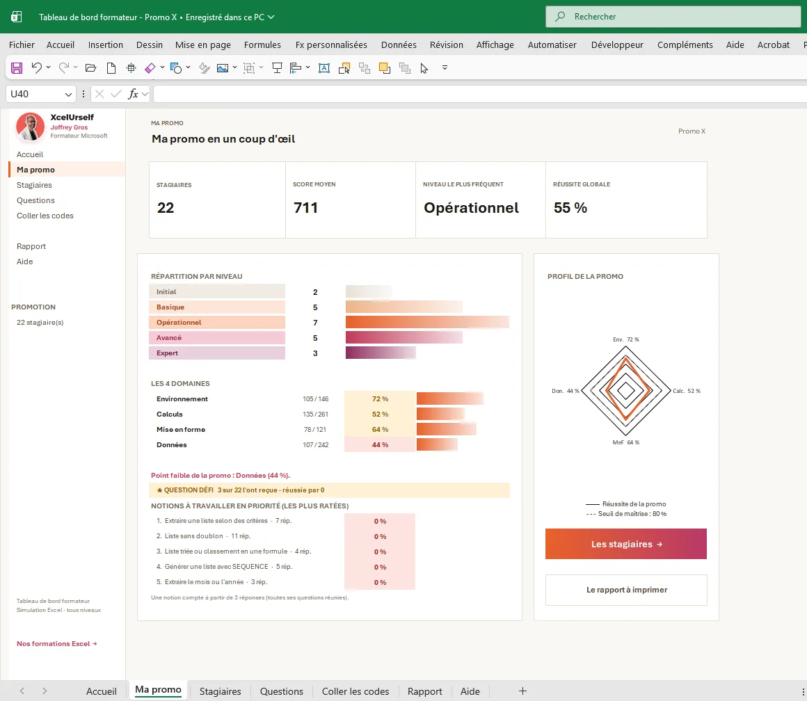

Formation en entreprise
Formation Excel, Power Query, Power BI et PowerPoint pour vos équipes
Débutant le lundi, efficace le vendredi.
En présentiel ou à distance, en groupe ou en individuel, sur quelques jours ou sur plusieurs mois. Du débutant à l'avancé, sur vos propres fichiers.
Pilote gratuit jusqu'à 15 stagiaires · sans engagement · réponse sous 48 h ouvrées

Niveau de chaque stagiairePoints faibles de la promoRapport à imprimerIls m'ont fait confiance
Vous reconnaissez votre situation ?
Ce que je forme
Excel
Formules, tableaux croisés dynamiques, fonctions dynamiques. Du débutant à l'avancé.
Power Query
Nettoyer, combiner et actualiser des fichiers sans code ni copier-coller.
Power BI
Tableaux de bord interactifs et rapports automatisés.
PowerPoint
Présentations professionnelles, masques et modèles de diapositives.
Aussi : Power Pivot et DAX, Word. Certifié MOS PowerPoint et TOSA Excel (915/1000). Sessions construites à partir de vos propres fichiers et de vos cas métier. Financement possible : j'interviens aussi via des organismes de formation partenaires certifiés Qualiopi, selon l'organisme et votre situation, votre OPCO ou le CPF peut prendre en charge la formation.
Un test qui sert à décider
Le tableau de bord n'est pas qu'un score. Il vous aide à décider : les groupes, c'est vous qui les composez.
Cerner les besoins
Savoir d'où part chaque stagiaire et la promo.
Choisir les thèmes
Reprendre en priorité les notions les plus ratées.
Composer des groupes
S'appuyer sur la répartition des niveaux pour les rendre homogènes. Vous restez maître de la décision.
Mesurer la progression
Positionnement d'entrée, puis évaluation finale.
- 1Navigation libreOn va où l'on veut : Accueil, Ma promo, Stagiaires, Questions, Coller les codes, Rapport, Aide. Aucun parcours imposé.
- 2Les chiffres clésNombre de stagiaires, score moyen, niveau le plus fréquent et réussite globale, lus en quelques secondes.
- 3Répartition par niveauDe Initial à Expert : on voit si la promo est homogène ou très dispersée, et si un seul groupe suffit.
- 4Les 4 domainesEnvironnement, Calculs, Mise en forme, Données, avec le pourcentage de réussite de chacun : où la promo est solide, où elle est fragile.
- 5Le profil de la promoLes domaines comparés d'un coup d'œil, avec le seuil de maîtrise de 80 %.
- 6Notions à travailler en prioritéLes notions les plus ratées, classées. Le programme de la formation se construit sur des besoins mesurés.
- 7Détail et rapportLe détail stagiaire par stagiaire et un rapport à imprimer, pour décider, former vos groupes et rendre compte.
Découvrir la simulation Excel pour organismes de formation, tarifs HT
Comment on démarre
- Un échange de 20 minutesVous décrivez votre besoin.
- Le test de positionnementPilote gratuit jusqu'à 15 stagiaires : on mesure le niveau de départ.
- Un parcours sur mesureDurée, rythme et format adaptés à votre équipe.
Ce que disent mes clients
« Outil testé et approuvé, à la fois hyper agréable à utiliser et très bien fait ! »
Tommy Rigault · excel-addict
« Pour l'avoir testé, je peux confirmer que l'outil est vraiment top ! »
Jean-Baptiste Caverne · TutoSurExcel
« Je confirme que ce test de positionnement est au top ! »
Liana Delapierre · uptimis
Retours laissés en commentaire de mon annonce sur LinkedIn.
« Formation sur mesure, quoi de mieux pour progresser à son rythme ? La méthode de Joffrey est parfaite. »
Nathalie Rance · Contrôleuse de gestion, La Poste Groupe
« Explications très claires, très pédagogue, s'adapte très bien au niveau du formé. Extrêmement disponible et flexible. Je le recommande vivement ! »
Cécile Naudot · Responsable RH, Valobat
« Très à l'écoute, formation adaptée et personnalisée à mes besoins et mon secteur d'activité. Ce que j'ai appris me sert déjà au quotidien. »
Yolène Legris · Responsable administrative et financière, Voco Paris
Parlons de votre équipe
Réponse sous 48 h ouvrées · Devis gratuit